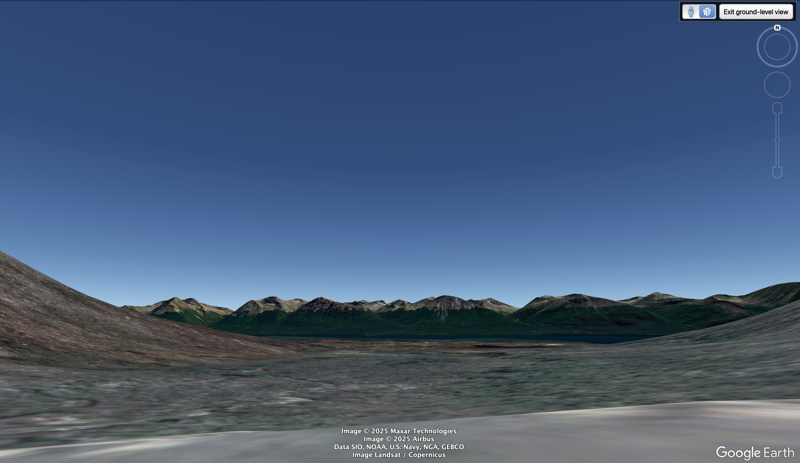
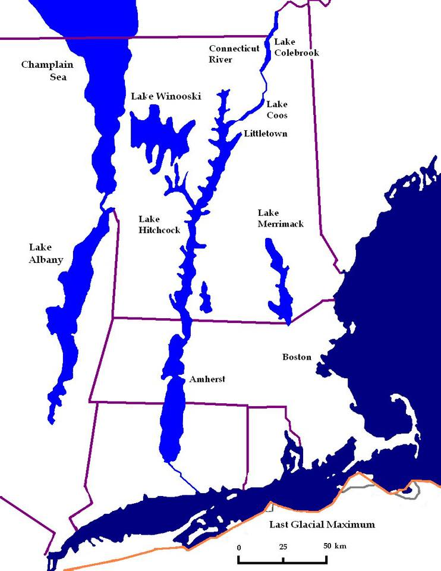

Quick Links
🔬 Planetary Chronometers

Abstract
Planetary Chronometers frames certain bowl-like basins and saddle geometries as heliolunar chronometers: landscape “registers” that bound seasonal solar bearings, lunar standstill envelopes, and glacial/hydrologic release timing. Version 2.0 formalizes the global geometry and introduces a reproducible screening rule (G = v · h²) for ranking candidate basins. The v2.1–v2.3 addendum extends the model with previously unpublished Vermont evidence, using deglacial paleolake systems as a controlled laboratory for replication and falsification testing.
What’s New (v2.1–v2.3 Addendum)
The addendum is intentionally additive: it does not restate the full global framework, but introduces new Vermont-centered evidence and a tighter falsification plan. The purpose is to show that the chronometer behavior can replicate within a single glaciated landscape, clarify causal ordering (deglaciation → hydrology → later human reuse), and establish Vermont as a field lab for independent testing.
- Vermont Deglacial Ignition Band: Meadow House Observatory (MHO) is positioned within a coherent melt-routing / “ignition” band associated with Paleo–Lake Winooski, extending north into Passumpsic paleolakes and south toward the Lake Hitchcock system.
- Replication Logic: Multiple short-lived paleolakes at comparable latitudes share repeatable lithologic and geometric constraints (quartz-rich metamorphic ridges; saddle-controlled basin outlets).
- Meridian as Constraint, not Cause: The 72.66°W corridor is presented as a discovery constraint (a control line for search + comparison), not an explanatory mechanism by itself.
- New falsifiable predictions: δ¹⁸O variance constraints, cosmogenic exposure-age differentials, notch-to-divide sequencing tests, and additional geochemical / geomorphic checks.
1 — Core Model (v2.0)
The v2.0 manuscript formalizes the Quartz Conic Resonance Hypothesis: quartz-bearing bowls act as heliolunar chronometers whose solstitial notches bound a local conic field with a bisector (often ~west for west-facing chronometers). Quartz is not framed as “creating” melt energy; rather, it biases timing via thermal inertia, piezoelectric feedback, and acoustic transduction — selecting first-melt pathways and sustaining perennial spring regimes.
The v2.0 package also includes a reproducibility kit: apex/notch centroids and rays (GeoJSON/KML), a horizon-aware azimuth calculator, field acoustics protocol (0.5–100 Hz), hydrology logging templates (including δ¹⁸O/δD), and a lithology scoring rubric.
2 — Vermont Deglacial Hydrochronometry Lab
Vermont is treated as a compact, testable landscape where chronometer predictions can be replicated and falsified. During late Pleistocene deglaciation, Vermont hosted multiple paleolake systems constrained by bedrock geometry and spillway elevation — making it unusually well-suited for sequencing tests.

2.1 Meadow House Observatory and Paleo–Lake Winooski
- Terrace reconstruction + basin modeling suggest Paleo–Lake Winooski reached elevations that lapped Meadow House meadow margins.
- Quartz–amphibolite saddles behave as hydraulic regulators, routing early meltwater while preserving stable discharge pathways.
- Key field observables: persistent springs below high-relief quartz saddles; basin geometries consistent with early ice thinning; low seasonal variability in spring flow relative to downslope controls.
2.2 Passumpsic Basin (Northern Analog)
- Stepped paleolakes draining northward toward St. Lawrence show terrace elevations that match Paleo–Lake Winooski bands.
- Lithologic continuity (quartzite + quartz-vein corridors) mirrors Worcester Range patterns: similar host lithology, saddle spacing/relief ratios, ridge-aligned spring emergence.
2.3 Putney Stoneworks & Glacial Lake Hitchcock (Southern Analog)
Terrace mapping and deglacial reconstructions indicate that the Putney, Vermont stonework complexes occupy a transitional elevation band associated with the northern extent and episodic drawdown phases of Glacial Lake Hitchcock, the proglacial lake that once filled the Connecticut River Valley during late Pleistocene retreat.
Key observations suggest that Putney functioned not as an isolated ceremonial site, but as part of a distributed hydrologic–observational system tied to lake-level regulation and meltwater routing:
- Hydrologic Positioning: The Putney stoneworks sit above primary Hitchcock shoreline terraces yet below later fluvial incision zones, consistent with a phase when lake levels oscillated and spillways were actively reorganizing. This placement would have afforded both visibility over lake surfaces and access to gravity-fed groundwater emerging from retreating ice-margin sediments.
- Lithologic and Structural Continuity: Bedrock and erratic composition in the Putney area shows continuity with quartz-bearing metamorphic units found throughout the Connecticut Valley uplands. Stone placements align with ridge-parallel fabric and slope breaks that naturally concentrate subsurface flow, reinforcing the interpretation of intentional siting along hydrologic control points rather than random occupation.
- Engineered Water Access: Field evidence suggests managed springs, channelized seepage paths, and stone-defined flow guidance consistent with low-energy water control rather than defensive or agricultural terracing. These features parallel known melt-phase hydrologic adaptations elsewhere in the valley during Hitchcock regression.
- Observational Geometry: Several stone alignments and cleared sightlines correspond to basin-scale axes rather than local topography alone, suggesting an observational function oriented toward seasonal solar bearings over the lake surface and surrounding ridgelines. Such geometry is consistent with chronometric use during periods of stable or slowly changing lake levels.
Comparative Implication: Taken together with Meadow House (Paleo–Lake Winooski) and the Passumpsic Basin, the Putney–Hitchcock system demonstrates that chronometer-like behavior emerges repeatedly where three conditions coincide:
- Quartz-rich lithology
- Saddle- or terrace-mediated meltwater control
- Prolonged deglacial lake stability followed by phased drawdown
This reinforces the interpretation of Planetary Chronometers as structurally biased melt-routing and observation systems embedded within deglaciating landscapes, rather than as isolated or culturally idiosyncratic constructions.
3 — Methods & Reproducibility
3.1 Conic Geometry & Bearings
Chronometer cones are defined by (i) a local observer apex, (ii) two bounding solstitial bearings (and optional equinox / lunar standstill envelopes), and (iii) horizon-aware corrections (DEM + refraction).
3.2 G = v · h² Screening Rule
Candidate basins are ranked using a reproducible screening metric (G = v · h²), treated as a global search heuristic — not a claim of “one true mechanism.”
3.3 Field Protocols (Sensors)
- Acoustics: notch/gap modes (bandpass 0.5–100 Hz); log geometry + mic placement + conditions.
- Hydrology: springs, discharge timing, seasonal logging, δ¹⁸O/δD sampling protocols.
- Geomorphology: terraces, saddle thresholds, spillway elevations, notch-to-divide sequencing.
4 — Data Backbone & Overlay Layers
This page explicitly separates overlay correlation from causal claims. The safe scientific move is: overlays are used to generate testable hypotheses; causality is asserted only after a model is fitted and evaluated.
4.1 Magnetics Backbone (recommended)
- INTERMAGNET — ground magnetometer observatory data (baseline magnetic field variation).
- SuperMAG — standardized high-latitude magnetometer network products (substorms, indices, timing).
- Auroral Oval Products — used as a visible proxy layer for magnetosphere–ionosphere coupling.
4.2 Atmosphere & Excitation Layers (overlay)
- Lightning / thunderstorm climatology — excitation source for ELF/Schumann-band variability (overlay only).
- Ionosphere “gate” modulation — solar activity as a boundary condition affecting coupling (overlay only).
4.3 Cryosphere / Land Surface Layers (overlay)
- Permafrost extent — boundary condition for soil hydrology + drying patterns (overlay only).
- Fuel / vegetation — used for fire-risk context (overlay only).
- Fire occurrence — consequence layer that may correlate with drying + lightning + fuels (kept separate from magnetics story unless tested).
5 — Falsification Tests & Predictions
The Vermont lab is designed to make the chronometer model easy to reject if wrong. Priority tests include:
- Stable Isotopes: δ¹⁸O / δD variance constraints across spring networks within predicted saddle-controlled basins.
- Cosmogenic Dating: exposure-age differentials across terraces / saddles that should sequence with predicted melt routing.
- Notch-to-Divide Sequencing: geomorphic ordering tests linking spillway thresholds to observed terraces.
- Horizon-Aware Geometry: DEM-derived horizon corrections to validate cone boundaries and uncertainty.
- Band-Limited Field Logging: acoustics + ELF/ULF measurement campaigns to test predicted windows without overclaiming mechanisms.
6 — Integration with Codex V5+
Planetary Chronometers sits inside the Codex as a reproducible “time / cone geometry” module and a field-test gateway to larger Earth systems modeling (hydrology, cryosphere, magnetics, and long-cycle orbital forcing). UNESCO and global site layers can corroborate search results, but are not treated as determinant mechanisms.
7 — Roadmap
- Publish v2.1–v2.3 addendum as a clean PDF package and link it here.
- Implement magnetics backbone overlays (INTERMAGNET + SuperMAG + auroral oval products) on the peer-review portal.
- Vermont field kit v1: add δ¹⁸O/δD protocol, terrace notebook, and standardized sensor metadata templates.
- Interactive viewer: bowl polygons + rays + uncertainty envelopes + selectable overlays (no causal claims by default).
Figures
- Figure 1 — Canonical bowl/cone geometry (above)
- Figure 2 — Vermont paleolake lab schematic (above)
- Figure 3 — Magnetics backbone + auroral oval overlay (to be added)
- Figure 4 — Multi-layer overlays (permafrost, lightning, fire) shown as correlation layers (to be added)